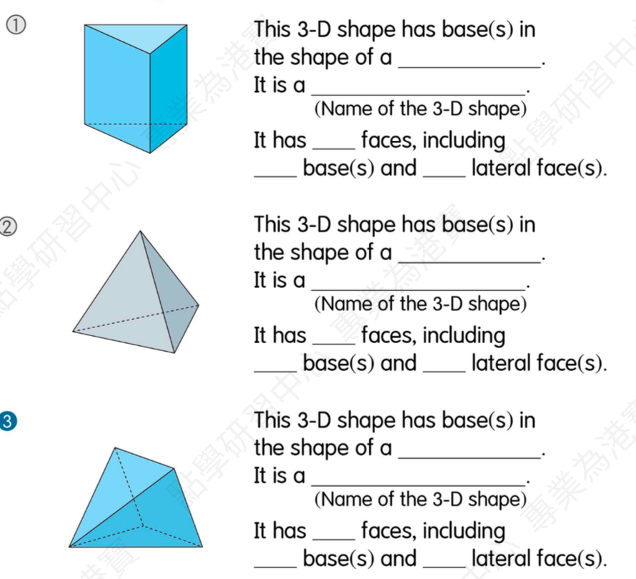
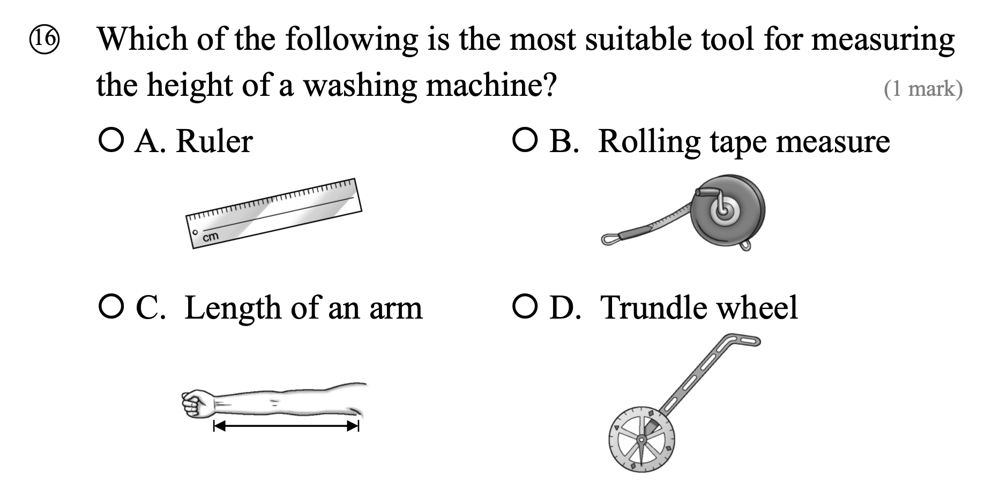
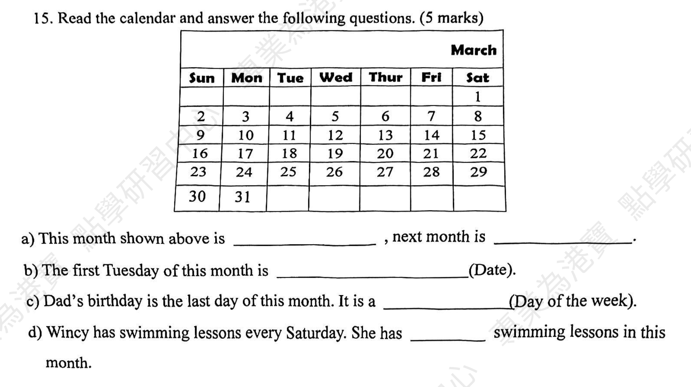

1. Does the football match start ______ one o'clock in the afternoon?
Answer: at
Explanation: 来源：吴若颺5.30英文考试 Part E；解析：具体时刻前用介词at，正确答案为at。
已掌握
| # | 单词/词组 | 中文意思 | 例句/说明 | 已掌握 |
|---|---|---|---|---|
| noun 名词 | ||||
| 1 | picnic | 野餐 | We have a picnic in the park. | |
| 2 | cinema | 电影院 | We watch films at the cinema. | |
| 3 | hair | 头发 | Her hair is long. | |
| 4 | zebra | 斑马 | I can use zebra in class. | |
| 5 | Friday | 周五 | I can use Friday in class. | |
| 6 | Saturday | 周六 | I can use Saturday in class. | |
| 7 | chef | 厨师 | The chef cooks dinner. | |
| verb 动词 | ||||
| 8 | touch | 触摸 | Do not touch the hot cup. | |
| 9 | choose | 选择 | I choose a book. | |
| 10 | carry | 带有/搬运 | I carry my bag. | |
| phrase 短语 | ||||
| 11 | look after | 照顾 | I look after my little sister. | |
| 12 | clean the dishes | 洗餐具 | I can use clean the dishes in class. | |
| 13 | post office | 邮局 | I can use post office in class. | |
| noun phrase 名词短语 | ||||
| 14 | police station | 警局 | I can use police station in class. | |
| adjective 形容词 | ||||
| 15 | rude | 粗鲁的 | Do not be rude. | |
| 16 | brave | 勇敢的 | The brave boy helps others. | |
| 17 | tiny | 小的 | I can use tiny in class. | |
| 18 | hard-working | 勤劳的，勤奋的 | I can use hard-working in class. | |
| uncategorized 未分类 | ||||
| 19 | keep | 保持 | I can use keep in class. | |
| 20 | September | 九月 | I can use September in class. | |
| # | 单词/词组 | 中文意思 | 例句/说明 | 已掌握 |
|---|---|---|---|---|
| adjective 形容词 | ||||
| 1 | brave | 勇敢的 | The brave boy helps others. | |
| noun 名词 | ||||
| 2 | pond | 池塘 | There is a small pond in the park. | |
| 3 | venue | 地点 | The venue is near our school. | |
| 4 | fable | 寓言 | The fable has a lesson. | |
| 5 | moral | 道理 | The story has a moral. | |
| 6 | shape | 形状 | A circle is a shape. | |
| 7 | clue | 线索 | This clue helps me. | |
| 8 | picnic | 野餐 | We have a picnic in the park. | |
| 9 | chapter | 章节 | This chapter is about animals. | |
| verb 动词 | ||||
| 10 | describe | 描述 | I can describe the picture. | |
| phrase 短语 | ||||
| 11 | Causeway Bay | 铜锣湾 | I can use Causeway Bay in class. | |
| 12 | look at | 看 | I can use look at in class. | |
| 13 | Lamma Island | 南丫岛 | I can use Lamma Island in class. | |
| 14 | red packet | 红包 | I can use red packet in class. | |
| uncategorized 未分类 | ||||
| 15 | line | 行数 | I can use line in class. | |
| 16 | False | 错误的 | I can use False in class. | |
| 17 | blanks | 空白 | I can use blanks in class. | |
| 18 | suitable | 合适的 | I can use suitable in class. | |
| 19 | spelling | 拼写 | I can use spelling in class. | |
| 20 | improvement | 提升 | I can use improvement in class. | |
| 21 | shout | 喊 | I can use shout in class. | |
| 22 | model | 模范 | I can use model in class. | |
| 23 | organic | 有机的 | I can use organic in class. | |
| 24 | farming | 耕种 | I can use farming in class. | |
| 25 | royal | 皇家的 | I can use royal in class. | |
| 26 | plain | 普通的 | I can use plain in class. | |
| 27 | stone | 石头 | I can use stone in class. | |
| 28 | campsite | 营地 | I can use campsite in class. | |
| 29 | adult | 成年人 | I can use adult in class. | |
| adverb 副词 | ||||
| 30 | accidently | 偶然地 | I can use accidently in class. | |
| # | 单词/词组 | 中文意思 | 例句/说明 | 已掌握 |
|---|---|---|---|---|
| time/date 时间日期 | ||||
| 1 | September | 九月 | September is the ninth month. | |
| 2 | November | 十一月 | November is the eleventh month. | |
| 3 | December | 十二月 | December is the twelfth month. | |
| 4 | Tuesday | 星期二 | Tuesday is a weekday. | |
| 5 | Saturday | 星期六 | Saturday is a weekend day. | |
| 6 | Sunday | 星期日 | Sunday is a weekend day. | |
| time unit 时间单位 | ||||
| 7 | day | 日 | A day has 24 hours. | |
| 8 | minute | 分 | A minute has 60 seconds. | |
| numbers 数字 | ||||
| 9 | seventeen | 17 | Seventeen is 17. | |
| 10 | seventy | 70 | Seventy is 70. | |
| 11 | ninety | 90 | Ninety is 90. | |
| ordinal numbers 序数 | ||||
| 12 | second | 第二 | This is the second shape. | |
| solid shape 立体图形 | ||||
| 13 | triangular prism | 三棱柱 | A triangular prism has triangular faces. | |
| 14 | pentagonal pyramid | 五棱锥 | A pentagonal pyramid has pentagonal faces. | |
| 15 | cylinder | 圆柱 | A cylinder has two circular faces. | |
| # | 单词/词组 | 中文意思 | 例句/说明 | 已掌握 |
|---|---|---|---|---|
| operations 运算 | ||||
| 1 | total | 总共的 | Find the total number of apples. | |
| geometry 几何 | ||||
| 2 | right angle | 直角 | A right angle is 90 degrees. | |
| 3 | perpendicular | 垂直 | Perpendicular lines meet at a right angle. | |
| 4 | perpendicular line | 垂直线 | Perpendicular lines meet at a right angle. | |
| 5 | line segment | 线段 | Draw a line segment. | |
| question word 题目词 | ||||
| 6 | calculate | 计算 | Calculate the answer. | |
| 7 | estimate | 估计 | Estimate the answer first. | |
| 8 | backwards | 向后；倒着 | Count backwards from 20. | |
| 9 | match | 匹配 | Match the number to the word. | |
| 10 | respectively | 分别地 | Tom and Ben have 2 and 3 books respectively. | |
| answer 答案 | ||||
| 11 | answer | 答案 | Write the answer in the box. | |
| comparison 比较 | ||||
| 12 | less | 更少的；小于 | 8 is less than 10. | |
| 13 | least | 最小的；最少的 | Which number is the least? | |
| time/date 时间日期 | ||||
| 14 | leap year | 闰年 | A leap year has 366 days. | |
| position 位置 | ||||
| 15 | behind | 后面 | The bag is behind the chair. | |
| 16 | above | 上面 | The clock is above the board. | |
| operations calculation 运算 | ||||
| 17 | A times B | A✖️B | A times B means multiplication. | |
| 18 | multiplication | 乘法 | Multiplication can use times. | |
| 19 | division | 除法 | Division is the opposite of multiplication. | |
| 20 | divisor | 除数 | The divisor divides the dividend. | |
| 21 | remainder | 余数 | The remainder is left after division. | |
| 22 | column form | 竖式形式 | Write it in column form. | |
| 23 | divide A by B | A 除以 B | Divide A by B. | |
| currency money 货币 | ||||
| 24 | cent | 分 | One cent is a small amount of money. | |
| 25 | exchange | 交换 | We exchange money at the counter. | |
| measurement 测量 | ||||
| 26 | measure | 测量 | We measure the length with a ruler. | |
| 27 | distance | 距离 | Find the distance between the two points. | |
| directions tool 方向工具 | ||||
| 28 | compass | 指南针 | A compass shows directions. | |
| 句型结构 | ||||
| 29 | Angle ... is larger than Angle ... | 角......大于角...... | Angle A is larger than Angle B. | |
| 30 | ... is to the west of ... | ......位于......的西侧。 | The bank is to the west of the school. | |



